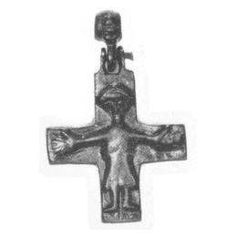
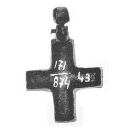

Catalog › CE-0041 · LOV1999-35
Cruce pectorală cu Hristos răstignit, cu chenar ca la encolpioane
sec. XI (cu semn de întrebare) (1001–1100) · loc necunoscut · Muzeul Național Maghiar, Budapesta, inv. 1874.171.43
pectoral cross, bronz; c. XI (cu semn de întrebare) (1001–1100); find spot unknown; kept at Muzeul Național Maghiar, Budapesta.




Identificare
- Categorie
- Cruce pectorală simplă
- Material
- Bronz
- Tehnică
- Turnare în relief
- Dimensiuni
- Î 38 × L 30 mm
Iconografie
- Avers
- Răstignirea (Hristos cu perizoma)
- Descriere avers
- Hristos în relief, cu chip asemănător unei păsări, mâini mari, perizoma răsucită spre exterior.
- Descriere revers
- Pe spate, un chenar ca la placa posterioară a encolpioanelor, dar fără urmă de închizătoare. Sus, o ureche dublă legată de inelul de agățare printr-o balama.
Datare și atribuire
- Datare
- sec. XI (cu semn de întrebare) (1001–1100)
- Centru
- Atelier local
Descoperire
- Context
- Colecție (fără context)
- Coordonate
- 47.4913° N, 19.0626° E
- Precizia locului
- Loc de păstrare (loc de descoperire incert)
Păstrare și referințe
- Colecție
- Muzeul Național Maghiar, Budapesta
- Nr. inventar
- 1874.171.43
- Bibliografie
- Zs. Lovag, Mittelalterliche Bronzegegenstände des Ungarischen Nationalmuseums (Catalogi Musei Nationalis Hungarici, Series Archaeologica III), Budapest, 1999, p. 30, cat. nr. 35, reprodusă la Abb. 35 a-b (planșele, p. 135). Bibliografie citată în sursă: Bárány-Oberschall 1953, 236, Abb. 75.e; Lovag 1979, 8, Abb. 2/b; Lovag 1980, 368, Abb. 2/6; Lovag 1982, 161, Abb. 5.
- Figura
- Abb. 35 a-b
- Planșe
- Lovag 1999, planșele, p. 135
- Observații
- Datare după Lovag: sec. XI (cu semn de întrebare). XI (cu semn de întrebare). Părțile laterale ale brațelor aproape egale sunt paralele. Loc de descoperire necunoscut; intrată în muzeu prin cumpărare. H 3,8 cm (4,7 cm cu inelul). Locul descoperirii nu e cunoscut cu precizie; punctul de pe hartă marchează locul de păstrare (Muzeul Național Maghiar), nu locul descoperirii. Coordonate: nu sunt date în sursă.
Citare: Corpus Encolpiorum, CE-0041, Cruce pectorală cu Hristos răstignit, cu chenar ca la encolpioane, https://vitaliejosanu1979-ux.github.io/primul-meu-proiect/piese/LOV1999-35/ (accesat 2026-10-17).